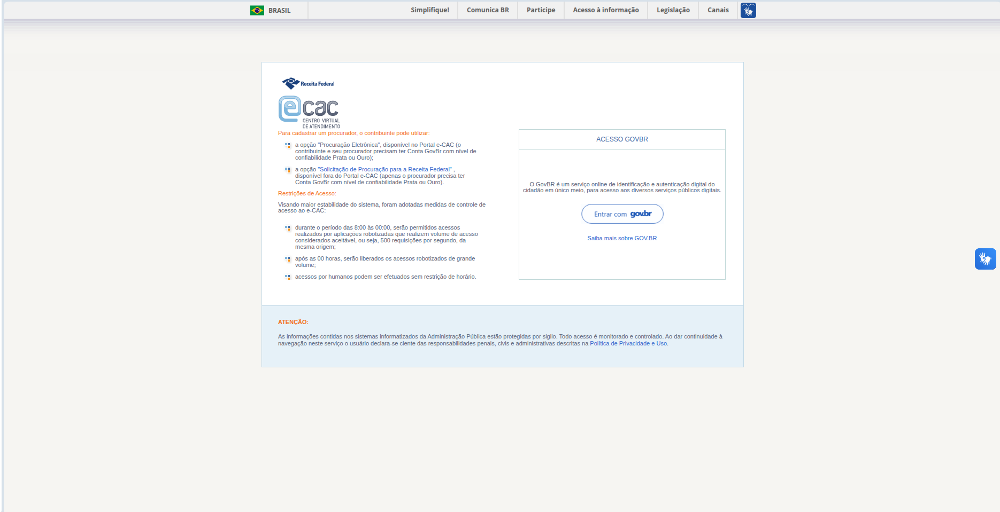
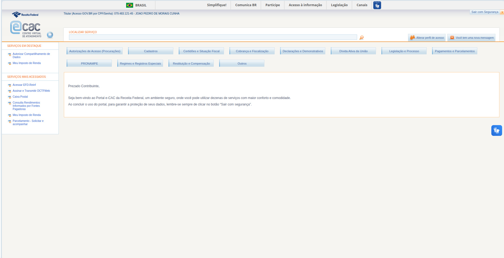
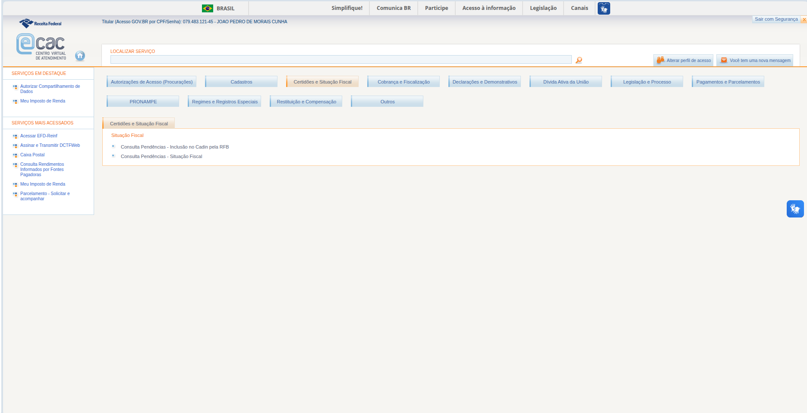

Guia de estilo
Introdução
Guia de estilo é um artefato da Interação-Humano-Computador (IHC), funcionando como um documento que registra as decisões de design para garantir a consistência de um produto ou de uma família de produtos. Sua principal finalidade é servir como uma ferramenta de comunicação entre designers e desenvolvedores, assegurando que a visão de qualidade de uso e a identidade visual sejam preservadas fielmente desde a concepção até a implementação final e manutenções futuras.
Ao padronizar elementos como grids de layout, tipografia, paleta de cores e o comportamento de componentes da interface, o guia reduz a carga cognitiva do usuário e facilita o aprendizado do sistema. Além de promover a eficiência da equipe de desenvolvimento, este documento fundamenta a metacomunicação do designer, permitindo que o usuário compreenda a lógica do produto de forma clara e intuitiva, minimizando possíveis rupturas na interação.
- OBS.: A continuação, como Planejamento de etapas para encontrar Ideias e Alternativas de Design, baseadas em Problemas na Interação e Interface, estarão em Planejamento da Avaliação do Análise de Tarefas, e Planejamento da Avaliação do Storyboard.
Tabela de contribuição
| Autor | Análises realizadas | Data |
|---|---|---|
| Heyttor Augusto | Análise dos elementos visuais do site | 11/05/2026 |
| Rafael Melatti | Análise do vocabulário e padrões | 11/05/2026 |
| João Morais | Elementos de interface | 11/05/2026 |
| Thiago Gomes | Elementos de ação | 11/05/2026 |
| Lucas Gabriel | Analise final do guia de estilo | 12/05/2026 |
| João Morais | Correções com feedback do professor após as apresentações 3 e 4 | 21/05/2026 |
Metodologia
Para este artefato os alunos separam varios aspectos do guia de estilo do site para analisaram separadamente, nessa análise, buscaram entender e documentos o padrão do site em cada aspecto, de criticar possiveis erros encontrados e adicionar sugestões se acharam necessário.
Foi encontrado também ao fazer pesquisas relacionadas a esse tema o guia de estilo de sites da receita federal na qual o grupo usou para verificar se o site do e-CaC está em conformidade com o guia de estilo oficial encontrado.
1. Elementos de interface
Segundo BARBOSA (2021, p. 283), no guia de estilo, os elementos de interface [ref.]: [ref.] são descritos no guia de estilos seguindo a estrutura:
- Disposição espacial e grid
- Janelas
- Tipografia
- Símbolos não tipográficos
- Cores
- Animações
A análise abaixo foi realizada a partir de três telas distintas do sistema: a Tela de Login, a Tela/Menu Inicial (com mensagem de boas-vindas) e a Navegação/Tela por Categoria (exemplo: "Certidões e Situação Fiscal"), permitindo observar tanto o estado padrão quanto comportamentos de seleção e exibição de subitens. As imagens das telas, usadas como referência para a análise dos elementos da interface, estão abaixo:



Com base nisso, abaixo, serão descritos os elementos de interface baseado no modelo supracitado:
1.1. Disposição espacial e grid
O e-CAC apresenta dois padrões de layout distintos, dependendo do contexto da página: a tela de autenticação (pré-login) e a área interna do portal (pós-login).
-
Tela de Login:
- O sistema adota um container central com largura fixa em torno de 880–900 px, recuado do topo do viewport. Acima dele há a barra "BRASIL" do Governo Federal ocupando 100% da largura, com cerca de 36 px de altura. O card principal utiliza um grid de duas colunas assimétrico: a coluna esquerda (~55% da largura) contém o branding e o bloco textual com instruções e restrições, enquanto a coluna direita (~45%) abriga a caixa "ACESSO GOVBR". O alinhamento vertical é top-aligned, ou seja, ambos os blocos começam do topo do card, deixando o lado direito visualmente mais "curto". As margens internas do card branco são de aproximadamente 30–40 px nas laterais e 30 px no topo e base.
-
Tela Inicial:
- Apresenta uma estrutura completamente diferente, com layout fluido em largura total (acima de 1500 px). Possui um cabeçalho duplo (faixa de menu institucional + faixa com identidade do contribuinte logado), uma sidebar esquerda fixa de aproximadamente 180 px com seções "SERVIÇOS EM DESTAQUE" e "SERVIÇOS MAIS ACESSADOS", e uma área de conteúdo principal que ocupa o restante da largura sem max-width perceptível. Os botões de categoria se distribuem horizontalmente com espaçamento de cerca de 8–10 px entre si, usando um sistema de flex-wrap sem colunas rígidas.
-
Navegação por Categoria:
- O layout introduz uma terceira região vertical abaixo da grade de botões: um painel de resultados com largura fluida (preenchendo todo o espaço entre a sidebar e a borda direita do viewport), separado dos botões por aproximadamente 20 px de respiro vertical. Esse painel possui sua própria estrutura interna em três níveis hierárquicos verticais — aba ativa (~30 px de altura), título da subseção (~25 px) e lista de links (com itens espaçados por ~12 px) — todos alinhados à esquerda, com indentação progressiva: a lista de links é indentada em ~30 px em relação à borda do painel, criando uma hierarquia visual em árvore.
1.2. Janelas
Os componentes de container do e-CAC seguem um estilo visual antigo.
-
Login:
-
O card principal de login possui fundo branco puro, com borda extremamente sutil (ou ausente), sem border-radius perceptível e sem box-shadow visível — diferencia-se do fundo apenas pelo contraste de luminância entre branco e cinza-pálido.
-
A caixa "ACESSO GOVBR" é um container menor aninhado na coluna direita, com borda fina cinza (aproximadamente 1 px sólido, tom #D0D0D0), cabeçalho separado do corpo por uma linha horizontal fina, cantos retos e padding interno generoso de cerca de 25–30 px. Dentro dela, o botão "Entrar com gov.br" é o único elemento com cantos arredondados (estilo pill, com border-radius alto), herdado do design system oficial do gov.br.
-
O texto "ATENÇÃO" possui largura idêntica ao card branco, fundo azul-bebê (~#E6F0F8), sem borda visível e padding interno de aproximadamente 20 px.
-
-
Menu Inicial:
-
Barra Lateral Esquerda: tem fundo branco sem borda visível, separando-se da área de conteúdo apenas por uma linha vertical fina.
-
Card Central de Boas-Vindas apresenta uma moldura laranja fina (~1 px, cor próxima de #E89B3C) que funciona como destaque visual.
-
Botões de Categoria: possuem aparência tridimensional antiga, com gradiente vertical sutil em tons de azul-claro, borda fina cinza-azulada, cantos levemente arredondados (~3–4 px), largura variável conforme o texto e altura aproximada de 28 px. No estado ativo/selecionado (observado no botão "Certidões e Situação Fiscal" da tela de categoria expandida), o botão perde o gradiente azul-claro e adota fundo branco com borda laranja superior mais espessa, perdendo também o efeito tridimensional — comportamento que sinaliza a conexão visual com o painel de resultados logo abaixo, criando um pseudo-vínculo de "tab + content area".
-
Painel de Resultados por Categoria: Aparece após a seleção de uma categoria. Possui: fundo branco, moldura laranja fina contornando todo o conteúdo (mesma cor #E89B3C usada no card de boas-vindas), uma aba interna no canto superior esquerdo (~180 px de largura, com texto preto sobre fundo branco e linha laranja inferior) que repete o nome da categoria selecionada, e padding interno de aproximadamente 15–20 px. A aba interna funciona como uma "etiqueta" do conteúdo, sobreposta à borda superior da janela — padrão típico de UIs antigas que imitavam fichários físicos.
-
1.3. Tipografia
A família tipográfica principal utilizada é um conjunto de fontes sans-serif clássica, com fortes chances de seguir o modelo: Arial, Helvetica, sans-serif, ou Verdana, Geneva, sans-serif.
A hierarquia tipográfica observada na tela de autenticação segue:
| Elemento | Tamanho aprox. | Peso | Cor |
|---|---|---|---|
| "BRASIL" (barra superior) | 11–12 px | Bold | Cinza-escuro |
| Headings de seção ("Para cadastrar…", "Restrições de Acesso") | 13 px | Bold | Laranja (~#D17A2A) |
| Corpo de texto (parágrafos e bullets) | 12 px | Regular | Cinza-escuro (~#555) |
| Links inline | 12 px | Regular | Azul (~#0066CC) |
| "ACESSO GOVBR" (título do card) | 13 px | Regular | Cinza-escuro |
| Botão "Entrar com gov.br" | 14 px | Bold | Azul-escuro |
| "ATENÇÃO:" | 12–13 px | Bold | Laranja |
-
Menu Inicial: mantém o mesmo padrão, com adições como o menu superior em Bold cinza (13 px), labels de seção em caixa alta laranja (11 px Bold) e texto dos botões de categoria em azul-marinho (~#1A4B7D) com peso Regular (12 px).
-
Tela de Categoria Expandida - Painel de Resultados: o nome da aba interna ("Certidões e Situação Fiscal") aparece em 12 px Regular, cor preta sobre fundo branco — diferente do azul-marinho usado no botão; o título da subcategoria ("Situação Fiscal") aparece em 12 px Bold na mesma cor laranja dos headings (~#D17A2A); e os links de serviço ("Consulta Pendências - Inclusão no Cadin pela RFB" etc.) aparecem em 12 px Regular, cor cinza-escura (~#555) — não em azul de link, apesar de serem clicáveis. Essa última escolha quebra a convenção visual estabelecida no restante do site, onde links interativos são sempre azuis, e pode prejudicar a affordance.
-
Outros: a altura de linha (line-height) modesta (~1.3–1.4), o letter-spacing é normal exceto nos cabeçalhos em laranja (com tracking adicional), e o Headings de seção são consistentemente apresentados em laranja e caixa alta, criando um sistema visual uniforme entre as telas.
1.4. Símbolos não tipográficos
O sistema utiliza ícones bitmap pequenos. O elemento mais recorrente são os bullets quadrados azul-amarelo-vermelho (~12×12 px, estilo flat com cores chapadas) que aparecem antes de cada item de lista nas duas telas.
- Tela de Categoria Expandida: nos itens da lista de serviços ("Consulta Pendências..."), o bullet aparece em uma versão azul-claro chapada simplificada (~8×8 px), sem os elementos amarelos e vermelhos da versão usada na sidebar e na tela de autenticação.
Entre os logotipos identificados: - Brasão/bandeira do Brasil na barra superior (~24×16 px, bitmap pequeno). - Logo Receita Federal com tipografia institucional em azul-escuro e símbolo abstrato à esquerda. - Logo e-CAC, com composição mais elaborada: um "@" estilizado em azul-claro com gradiente, seguido de "cac" em azul-escuro com efeito de contorno e a sigla "CENTRO VIRTUAL DE ATENDIMENTO" em capitulares pequenas abaixo.
Os ícones de ação da tela pós-login incluem: uma lupa laranja dentro do campo "LOCALIZAR SERVIÇO", o ícone de "Alterar perfil de acesso" (dois bonecos em laranja/marrom), o ícone de "Você tem uma nova mensagem" (envelope laranja) e o ícone home (casa laranja em círculo azul-claro).
O ícone de acessibilidade VLibras (mão estilizada com símbolo "I" sobre fundo azul-royal) aparece recorrentemente em ambas as telas, sendo o único elemento da barra superior com cantos arredondados visíveis (~28×28 px na barra fixa e ~36×36 px na versão flutuante).
Os separadores são linhas finas (~1 px, cinza ~#DDDDDD) usadas para dividir a barra superior do conteúdo, o cabeçalho do card "ACESSO GOVBR" do corpo, e as seções da sidebar. Linhas verticais finas separam itens do menu superior e o input da lupa no campo de busca. Na tela de categoria expandida, observa-se ainda uma linha laranja horizontal mais marcada logo abaixo da aba interna ativa, funcionando como reforço visual do "vínculo" entre a aba e o conteúdo abaixo.
Cabe destacar que não há ilustrações, ícones SVG modernos, infográficos ou imagens decorativas em nenhuma das telas.
1.5. Cores
A paleta de cores do e-CAC é organizada em torno de três grupos principais: azul institucional (cor primária), laranja (cor de destaque e ação, sendo considerada cor secundária) e neutros (cinzas).
Paleta primária (azuis):
| Função | Cor aproximada | Aplicação |
|---|---|---|
| Azul institucional escuro | #1A4B7D / #2C5F8D |
Logo Receita Federal, texto de botões, links principais |
| Azul de link | #0066CC / #1E73BE |
Links inline, "Saiba mais sobre GOV.BR" |
| Azul-claro (gradiente botões) | #D8E4EF → #B8CFE0 |
Botões de categoria na tela pós-login |
| Azul-royal | #1E5AAE |
Botão VLibras e ícones de acessibilidade |
| Azul-bebê | #E6F0F8 |
Faixa "ATENÇÃO" na tela de autenticação |
Cor de destaque (laranja institucional):
| Função | Cor aproximada | Aplicação |
|---|---|---|
| Laranja para headings | #D17A2A / #E89B3C |
Títulos de seção, "ATENÇÃO:", labels em caixa alta |
| Laranja para bordas | #E89B3C |
Moldura do card de boas-vindas e do painel de resultados |
| Laranja para ícones | #D17A2A |
Lupa, envelope, ícones de ação |
| Laranja para estado ativo | #E89B3C |
Borda superior do botão de categoria selecionado, linha inferior da aba ativa |
Neutros:
| Função | Cor aproximada |
|---|---|
| Texto principal | #333333 / #555555 |
| Texto secundário | #888888 |
| Fundo da página | #EAEAEA / #E5E5E5 |
| Fundo de cards | #FFFFFF |
| Bordas finas | #D0D0D0 / #DDDDDD |
A aplicação cromática segue uma lógica funcional: o fundo da página é cinza-pálido uniforme (sem texturas ou gradientes), os cards têm fundo branco diferenciado apenas por contraste de luminância, os botões usam gradiente vertical sutil em tons de azul-claro com texto azul-marinho, e os links são apresentados em azul puro sem sublinhado por padrão. Não há paleta explícita para estados de erro, sucesso ou aviso, nem suporte a modo escuro ou modo de alto contraste.
1.6. Animações
Animações presentes:
- Hover em links: troca de cor (azul → azul mais escuro) ou aparecimento de sublinhado, com transição instantânea ou de aproximadamente 150 ms.
- Hover em botões de categoria: leve mudança de gradiente (clareamento ou escurecimento), provavelmente com transition: background 200ms ease.
- Clique em botão de categoria: transição de estado padrão (gradiente azul-claro) para estado ativo (fundo branco com borda laranja superior) acompanhada da renderização do painel de resultados abaixo. Pelo estilo do sistema, é provável que essa transição seja instantânea, sem animação de fade ou slide — o painel simplesmente aparece após uma requisição síncrona ao servidor.
- Hover no botão "Entrar com gov.br": escurecimento de borda ou fundo, mantendo o estilo pill.
- Focus em inputs: borda destacada em azul — comportamento padrão do navegador, sem customização sofisticada.
Animações ausentes: - Micro-interações modernas (button ripple, skeleton screens, fade-in de conteúdo). - Transições suaves entre páginas ou entre estados de categoria — cada seleção provoca recarregamento de seção sem animação. - Loading sofisticado — provavelmente apenas o spinner padrão do navegador ou GIFs antigos. - Parallax, scroll-triggered animations, lazy-load com fade. - Hover de cartões com elevação (shadow on hover). - Animações no botão de acessibilidade VLibras.
O easing e durações esperadas são tipicamente transition: all 0.2s linear ou CSS sem easing customizado, sem qualquer indicação de uso de bibliotecas modernas como GSAP, Framer Motion ou animações com cubic-bezier refinado.
2. Elementos de ação
Os elementos de ação no portal e-CAC apresentam uma transição clara entre os padrões legados da Receita Federal e as diretrizes unificadas do Padrão Digital de Governo (Design System do gov.br). A interface utiliza esses componentes para permitir que o contribuinte execute tarefas, obtenha informações ou interaja com formulários e declarações.
Abaixo estão os principais elementos mapeados e seus comportamentos no sistema:
- Botões (Buttons): * Pré-login: O botão principal de ação "Entrar com gov.br" segue estritamente o design system atual. Ele apresenta o formato pill (cantos totalmente arredondados), utiliza a cor azul-escuro institucional para alta prioridade e traz a tipografia em bold.
- Pós-login: Os botões de navegação por categoria (ex: "Certidões e Situação Fiscal") seguem um padrão visual defasado. Eles apresentam um aspecto tridimensional com um leve gradiente azul-claro e bordas sutilmente arredondadas. Ao serem clicados (estado ativo), perdem o gradiente, ganham fundo branco e uma borda superior laranja espessa.
- Links (Hyperlinks):
- São usados extensivamente tanto para navegação contextual (ex: "Saiba mais sobre GOV.BR") quanto para listar os serviços disponíveis na área logada. No padrão geral, adotam a cor azul clássica (
#0066CC), garantindo o reconhecimento imediato de sua interatividade. - Inconsistência: No painel de resultados (tela de categoria expandida), os links que direcionam aos serviços da Receita aparecem em cinza-escuro (
#555). Isso quebra a convenção de affordance visual adotada no resto da plataforma, forçando o usuário a deduzir que o texto estruturado em lista é clicável.
- São usados extensivamente tanto para navegação contextual (ex: "Saiba mais sobre GOV.BR") quanto para listar os serviços disponíveis na área logada. No padrão geral, adotam a cor azul clássica (
- Tags e Abas de Interação: * O e-CAC utiliza blocos textuais que funcionam como abas (no canto superior esquerdo dos painéis de resultado) para indicar e fixar o contexto da categoria selecionada. Visualmente, comportam-se como etiquetas de fichário em vez das tags em formato de pílula recomendadas pelas diretrizes mais recentes de design digital do governo.
- Microcopy (Redação e Usabilidade):
- Enquanto o padrão gov.br exige o uso de verbos diretos no infinitivo para botões (ex: "Acessar", "Enviar"), a área interna do e-CAC adapta seu microcopy ao jargão técnico-contábil do seu público-alvo principal. Os elementos de ação frequentemente utilizam termos ancorados em legislações e sistemas legados (ex: "Consulta Pendências", "Emitir DARF"). Embora o uso excessivo de siglas e termos técnicos contrarie as heurísticas gerais para usuários leigos, garante eficiência e clareza para os profissionais do setor.
3. Vocabulário e padrões
Em relação aos padrões, mesmo que eles tenham sido definidos no guia de estilo da Receita Federal, eles não são cumpridos.
Após analisado o site de forma completa não foi encontrado um padrão consistente em todo o site. Todas as rotas internas do site possuem o mesmo padrão, mas muitos dos serviços do próprio e-CaC estão em processo de migração para o gov.br, causando inconsistência no padrão adotado pelo site. Além disso, a aba de leilões da Receita Federal tem um padrão próprio, mesmo fazendo parte do e-CaC.
Quanto ao vocabulário ele é majoritariamente voltado para o público da área contábil e financeira, usando termos técnicos e leis não simplificadas para dar as informações necessárias para o uso das funcionalidades do site. Ao mais, elas também não são padronizadas no guia de estilo.
4. Elementos visuais
No guia de estilo encontrado pelos estudantes, não é mencionado em nenhum momento da página como os elementos visuais devem se comportar, deixando em aberto como esses elementos devem ser apresentados. Ao analisar os elementos visuais, é possível perceber uma falta de resolução nas imagens: tanto os ícones da Receita Federal quanto o ícone do e-CAC possuem resolução bastante baixa, o que transmite ao site uma impressão de amadorismo.
Outro ponto a se destacar são os ícones localizados ao lado dos botões e da barra de pesquisa, que também apresentam baixa resolução. Em contrapartida, um elemento visual positivo é o botão de Libras, que possui boa resolução, uma cor que se destaca do fundo branco do site e uma imagem de fácil entendimento para os usuários.Observe nas imagens 4 e 5 contendo os problemas encontrados
4. imagem dos icones

5. Imagem dos icones de interrogação

Como sugestão, o grupo analisou que o site necessita de uma atualização em seus ícones, de forma a deixá-los em conformidade com os demais elementos visuais presentes em outros sites da Receita Federal e do GOV.BR, tornando a interface mais familiar para o usuário. Além disso, recomenda-se substituir os elementos em formato quadrado que ficam ao lado dos serviços por ícones de interrogação, para deixar mais claro ao usuário que aquele elemento serve para esclarecer dúvidas sobre o serviço específico.
5. Analise final do guia de estilo
A partir das avaliações realizadas nos tópicos anteriores, conclui-se que o portal e-CAC carece de uma padronização unificada, apresentando uma identidade visual híbrida e fragmentada. O sistema encontra-se visivelmente em um estado de transição entre os padrões legados da Receita Federal e as diretrizes do Padrão Digital de Governo (gov.br), o que resulta no descumprimento de premissas essenciais de um guia de estilo, como garantir a consistência e reduzir a carga cognitiva do usuário.
Os principais pontos de atenção mapeados na análise incluem:
- Inconsistência Arquitetural e de Padrões: Não há um padrão visual consistente em toda a plataforma. Enquanto a tela de autenticação adota componentes modernos (como botões em formato pill do gov.br), a área interna e abas específicas (como a de leilões) possuem layouts próprios e defasados. Essa migração parcial causa rupturas na interação.
- Problemas de Affordance: Há uma quebra de expectativa no reconhecimento de elementos clicáveis. O uso de links em cinza-escuro no painel de resultados de categorias contraria a convenção estabelecida no próprio sistema de utilizar a cor azul para hiperlinks, forçando o usuário a deduzir a interatividade da lista.
- Baixa Fidelidade Visual: A utilização de ícones e logotipos em baixa resolução prejudica a estética da interface, transmitindo uma impressão de amadorismo no design. Além disso, os componentes visuais, como botões tridimensionais com gradientes e janelas em formato de "fichário", refletem um design de interface antigo e sem suporte a animações ou micro-interações modernas.
- Vocabulário Segmentado: O microcopy e os termos utilizados são altamente técnicos e ancorados em jargões contábeis e leis. Embora isso crie uma barreira para usuários leigos, foi avaliado que tal escolha garante eficiência e clareza para o público-alvo principal, composto por profissionais do setor.
Considerações para Melhoria:
Para que o guia de estilo cumpra seu papel de facilitar o aprendizado do sistema e preservar a visão de qualidade, é fortemente recomendada uma migração definitiva de todos os fluxos e componentes para o design system oficial do gov.br. Sugere-se a substituição imediata dos ativos visuais de baixa resolução por SVGs modernos, a padronização das cores de links para garantir affordance, e a substituição de ícones abstratos (como os bullets quadrados) por elementos com semântica clara (como ícones de interrogação para esclarecimento de dúvidas), tornando a interface mais intuitiva e familiar.
6. Agradecimentos
Agradecemos à ferramenta de IA Claude, que foi usada para extrair os elementos do Layout e Grid. Ela nos forneceu estes elementos da estilização da página: tamanho das fontes em pixels, esquema de cores em rgb e hexadecimal, tamanho dos quadros, animações. As demais análises e textos foram feitas pelos membros do grupo.
Bibliografia
- Guia de estilo, GOV, 2023, https://www.gov.br/receitafederal/pt-br/centrais-de-conteudo/guias-e-manuais/guia-de-estilos, Acesso em: 11/05/2026
- Portal E-cac, Portal E-cac,https://www.gov.br/receitafederal/pt-br/canais_atendimento/atendimento-virtual, Acesso em: 11/05/2026
- Serviços do E-cac, GOV,https://servicos.receita.fazenda.gov.br/Servicos/servicos-ecac/default.aspxl, Acesso em: 11/05/2026
- BARBOSA, S. D. J.; SILVA, B. S. da. Interação humano-computador. Rio de Janeiro: Elsevier, 2010.
Versionamento
| Versão | Data | Descrição | Autor(es/as) | Revisor(es/as) |
|---|---|---|---|---|
| 1.0 | 11/05/2026 | Iniciação do documento e análise dos elementos visuais | Heyttor Augusto | Rafael Melatti |
| 1.1 | 11/05/2026 | Documentação de Vocabulários e Padrões e correções | Rafael Melatti | - |
| 1.2 | 11/05/2026 | Documentação de Elementos de Interface e correções | Rafael Melatti | - |
| 1.3 | 11/05/2026 | Documentação de Elementos de ação | Thiago Gomes | - |
| 1.4 | 12/05/2026 | Documentação da analise final do guia de estilo | Lucas Gabriel | - |
| 1.5 | 21/05/2026 | Correção pós apresentação das etapas 3 e 4 | João Morais | - |